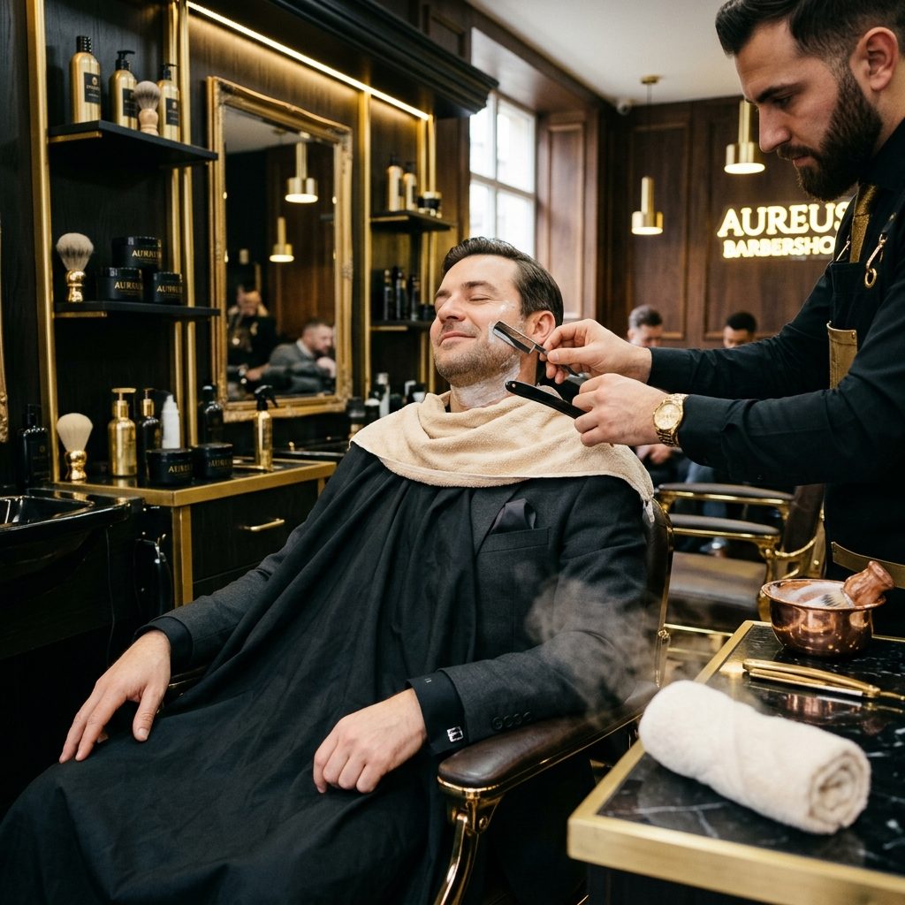

Chandan Salon was conceived as an antidote to commercialized, high-volume beauty operations. Director Chandan Dev founded the atelier with a simple principle: hair design is a branch of geometric architecture.
We believe that standard trends fade rapidly, but tailored visual structure remains timeless. Every stylist on our floor undergoes intensive training to assess head shape, hair density, and growth vectors before ever placing a comb.
In 2018, to expand our skincare and bridal suites, we relocated to a private promenade inside Mayfair. Here, we designed a client lounge optimized for absolute relaxation—offering a quiet space for executives and patrons.
We reject sulfate-heavy shampoo formulas and synthetic skincare additives. Every product applied at our wash basins or aesthetics suites is carefully formulated using pure plant-derived botanical active serums, cold-pressed seed oils, and small-batch peptides that support long-term hair and dermal health.
Our hygiene standards are uncompromising. Unlike typical salons that rely solely on liquid disinfectant sprays, we process all styling combs, scissors, barbering straight blades, and aesthetic equipment through a hospital-grade high-pressure autoclave steam sterilizer before every single reservation.
Chandan Dev opens the first boutique in Knightsbridge. Operating on a strict referral-only basis, the boutique gained recognition among standard-setting London executives for precision scissor sculpture.
The salon relocates to a spacious, multi-suite promenade in Mayfair W1. We integrated private aesthetic cabins, traditional hot shave barber chairs, and introduced our organic apothecary back-bar series.
Expanding our dermal department, we introduced high-definition restorative bridal rituals and multi-peptide cellular hydration therapies, hiring specialized skin aestheticians trained in Milan.
To support busy patron calendars, we launched our structured private membership levels (Essential, Elite, Bespoke) along with a fully digital interactive scheduling coordinator to maintain prompt service.